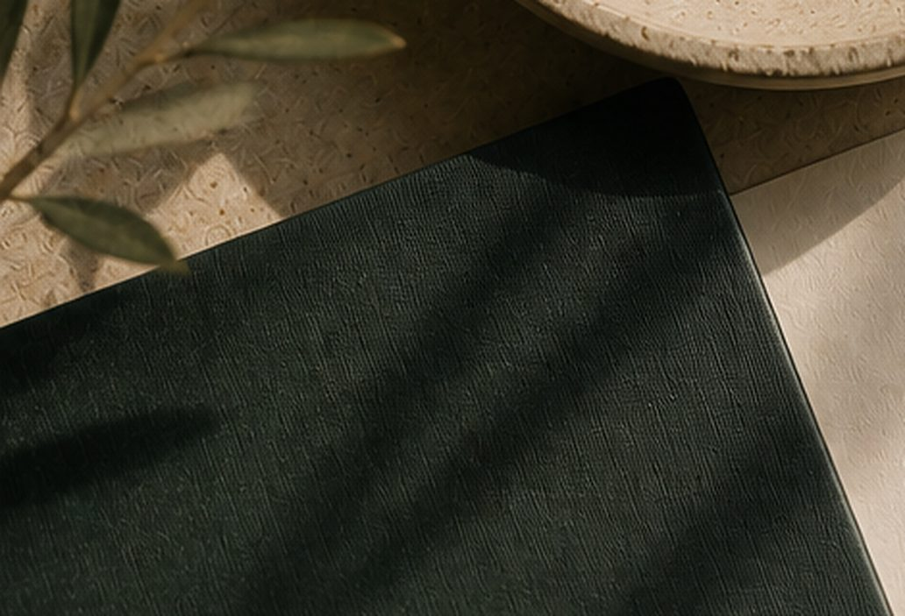

Digital PR Without the Gimmicks
Why gimmicky surveys and quirky calculators produce short-lived links — and what actually builds a company's reputation as a trusted source.
A lot of digital PR advice still leans on the same handful of tactics: a quirky calculator, a survey of a thousand people about something mildly interesting, pitched to journalists as a "study," collecting a few links from sites that'll run almost anything with a chart attached. It works, in the narrowest sense. It also tends to produce coverage that has nothing to do with what the company actually does.
Digital PR without gimmicks means earning coverage because a company has something genuinely worth reporting on — real data, real expertise, a real point of view — rather than manufacturing a novelty designed purely to attract links. The gimmick version isn't wrong so much as short-lived. It gets a link, sometimes a good one, and leaves nothing behind that builds the company's actual reputation in its field — which is the same problem with ask-first outreach.
Why the gimmick approach runs out of road
The quirky-survey model relies on novelty, and novelty has a shelf life. A campaign built around an unrelated, attention-grabbing hook can generate short-term coverage, but it rarely contributes to the kind of subject-matter reputation that gets a company cited repeatedly, because the coverage isn't actually about anything the company is credible on. A financial services firm getting written up for a survey about people's favourite pizza toppings gets a headline and a backlink. It gets nothing that makes a journalist think of them next time there's a genuine finance story.
That distinction matters more now than it used to. AI systems assembling answers aren't just counting citations — they're forming some notion of what a source is reliably good at. A scattershot history of unrelated novelty coverage doesn't build that. Consistent, on-topic expertise does.
What "real" coverage is actually built from
Coverage that compounds into genuine authority tends to come from three sources: original data a company is positioned to gather because of what it actually does, expert commentary on stories already happening in its field, and a clearly stated point of view on a debate its industry is having. None of those require a gimmick. They require the company to already know something worth saying.
Original data is the most durable of the three, because it can't easily be replicated by a competitor overnight. A logistics company analysing its own shipment data for seasonal delay patterns has something a general newsroom can't get anywhere else. A marketing agency running the numbers on client campaigns across a full year has the same advantage. The data doesn't need to be dramatic. It needs to be real, specific, and something only that company was positioned to produce.
Being a reliable source beats being a memorable stunt
Journalists return to sources who were accurate, responsive and genuinely useful the first time, which means a company that shows up reliably as an expert commentator over months tends to accumulate more meaningful coverage than one relying on a single viral campaign. This is the less exciting half of digital PR, and it's also the part that actually builds a reputation rather than a moment. Responding properly and quickly when a journalist needs a quote on deadline, giving a straight answer instead of a marketing line, being willing to say something slightly more specific than "it depends" — these are unglamorous, and they're what gets a company on a journalist's shortlist for the next story too.
How this shows up in a company's own coverage over time
The measurable difference between gimmick-driven and authority-driven PR isn't always visible campaign to campaign. It shows up over a longer stretch, in the shape of the coverage a company accumulates. A body of coverage built around genuine expertise tends to cluster around a company's actual subject area, which is what allows both readers and AI systems to recognise a consistent area of authority; gimmick-driven coverage tends to scatter across unrelated topics with no throughline. One produces a reputation. The other produces a pile of unrelated headlines that happen to share a company name.
What this looks like in practice
Digital PR without gimmicks isn't slower out of principle — it's slower because it depends on a company actually having something to say, which takes longer to develop than a quirky survey does. It means building out the internal habit of tracking data worth sharing, having someone available to comment when relevant news breaks, and being willing to publish a real opinion instead of a safe one.
The payoff is coverage that means something a year later — the kind that builds a company's standing in its own field, rather than a backlink that did its job and now has nothing to do with what the company actually does. It's a slower way to build genuine authority rather than just a rankings bump, but it's the kind that lasts.
By RankForImpact
All insights
Ready to build authority that lasts?
Let’s grow your brand and create impact—together.